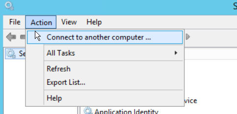

Summary: You get a warning message when you click on Configuration Database Maintenance in StealthINTERCEPT (SI) Console stating that "The SQL Agent is required to setup database maintenance" and not sure what this Agent is and how to turn it on
Issue: SQL Server Agent is a component of Microsoft SQL Server which schedules jobs and handles other automated tasks. It runs as a Windows service so it can start automatically when the system boots or it can be started manually. In order for SI to set-up maintenance tasks in the database backend we require that service to be running. The agent is found directly on the SQL server and is a service that comes standard with the base SQL installation, so you do not need to add it. All that is needed is to start the service from the services console or from the SQL Configuration Console (not from SQL management studio). Once the service is started you should be able to access the maintenance tasks.
Instructions: When trying to schedule Database Maintenance tasks you may see this warning message:
The SQL Agent is required to setup database maintenance.
Please resolve current issue and try again.
SQL Agent can't be contacted. SQL Agent status is "stopped."
To remedy, follow these steps:
1.) Login directly to the MS SQL server or you can connect directly to the services console of a remote server using the Action menu item:

2.) Turn on SQL Server agent service in the services console:
3.) Accessing the DB maintenance tasks from the SI Windows 32-bit console should now be successful
Additionally, here are some additional links about the SQL Agent if needed:
https://docs.microsoft.com/en-us/sql/database-engine/configure-windows/start-stop-pause-resume-restart-sql-server-services
https://docs.microsoft.com/en-us/sql/ssms/agent/autostart-sql-server-agent-sql-server-management-studio
https://docs.microsoft.com/en-us/sql/ssms/agent/start-stop-or-pause-the-sql-server-agent-service
Product: StealthINTERCEPT
Module: SI - Admin Console
Versions: All
Dev Ticket: NA - SI Dependency on MS SQL Application
Legacy Article ID: 2342